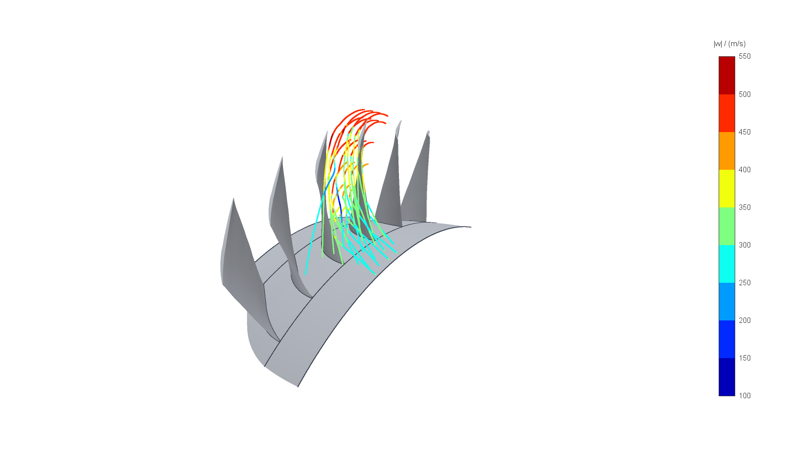
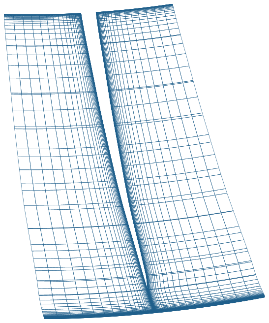
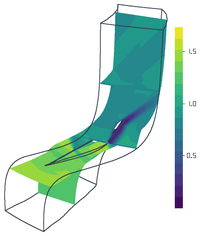

NASA Rotor 37, Spalart-Allmaras, fine mesh
Transonic compressor rotor (36 blades, 17,188.7 rpm), viscous with Spalart-Allmaras down to the wall: one pitch with 0.356 mm tip clearance, 480,768 cells, y+ about 1, back pressure 120 kPa. With the way to the converged computation, pictures of the blade, films of the rotating blade row and streamlines.
Case summary
| Item | Value |
|---|---|
| Model | Navier-Stokes, turbulent (Spalart-Allmaras) |
| Mesh | 480,768 cells |
| Time stepping | Newton-Krylov (implicit) |
| Result of the run | converged after 663 steps, relative residual 9.9·10−9 |
What the case shows
Purpose
Rotor 37 is a transonic compressor rotor with 36 blades that compresses about 20 kg/s of air to a total pressure ratio of about 2 at design speed (17,188.7 rpm). At the blade tip the air arrives at about Mach 1.4 relative to the blade. A shock stands in front of the passage and meets the boundary layer on the suction side, and air flows through the clearance over the tip from the pressure to the suction side. The case tests how the turbulence model, near-wall resolution, shock and tip-clearance flow work together in the rotating frame. It is the most demanding case of the collection and the one that took the most work.
This page therefore describes not only the result but also the way there: which difficulties came up, what was built against them, and what each change did. The inviscid computation of the same rotor with its characteristic is on the page Rotor 37, Euler.
Method
One blade pitch (10°) is computed with rotationally periodic boundaries in the rotating frame. The mesh comes from the passage generator and the MERIDL file of the geometry: 480768 cells, hexahedra with a few prisms at the leading and trailing edges, the first cell at blade, hub, casing and tip 2 to 4 µm high so that y+ is about 1. The 0.356 mm clearance over the tip has 20 cell layers across the gap and eight strips across the blade thickness. Face non-orthogonality stays below 70°.
The turbulence model is Spalart-Allmaras without wall functions, fully coupled with the flow. The flux is HLLC, second order with the Venkatakrishnan limiter, and the time integration is Newton-Krylov. Three switches belong to the case, because without them the computation does not converge:
-kopplungab:1e30couples the turbulence variable into the Newton system from the first step (see coupling).-turbulenzskala:zellescales the turbulence variable in GMRES per cell by its own value instead of the largest value of the field.-gradientverstaerkung:schwelleuses Green-Gauss instead of least squares in the cells where least squares would give a face value outside the neighbour values (see gradients).
The run starts from the inflow state with a static back pressure of 120 kPa at the hub of the outlet. After 663 Newton steps the residual has fallen to 9.9·10−9 of its reference, in about 2.7 hours on four cores. Per pitch, 0.56694 kg/s leave at the outlet against 0.56694 kg/s at the inlet (0.999999).
Result against the measurement
The performance figures are averaged over the measurement planes (R53, R123): total pressure ratio, total temperature ratio and isentropic efficiency. “Measured” is the measurement at the same mass flow, interpolated linearly between the measured points. The points at 112, 116 and 123 kPa are restarted from the result at 120 kPa.
| Back pressure in kPa | Mass flow in kg/s | Pressure ratio | measured | Temperature ratio | measured | Efficiency | measured |
|---|---|---|---|---|---|---|---|
| 112 | 20.65 | 1.800 | 2.066 | 1.220 | 1.260 | 0.831 | 0.886 |
| 116 | 20.62 | 1.857 | 2.067 | 1.231 | 1.261 | 0.836 | 0.884 |
| 120 | 20.43 | 1.918 | 2.089 | 1.245 | 1.267 | 0.835 | 0.877 |
| 123 | 19.55 | 1.961 | 2.139 | 1.259 | 1.284 | 0.819 | 0.854 |
The pressure ratio is 8 to 13 % below the measurement at all points, the temperature ratio 1.8 to 3.2 %, the efficiency 0.035 to 0.055. So the rotor does too little work, not just with too much loss. With rising back pressure the shortfall in pressure ratio becomes smaller but does not vanish. The point at 123 kPa lies close to the measured stall limit (19.39 kg/s); its residual stayed at about 0.25 of the reference after 600 steps, so its values are only an indication.
For a while the back-calculation of the exit flow angle (deviation) seemed to explain the shortfall: on the coarse mesh the computation stayed on average 3.1° behind the metal angle over the span, the measurement evaluated with the same formula only 0.1°. This did not hold. With the correct channel behind the rotor (step 18) the back-calculation reverses to −2.3°, while the shortfall in pressure ratio stays the same – the number depends on radii and axial velocity in the measurement plane, not on the blade. The direct comparison of the spanwise profiles is more telling (step 19): at midspan work and efficiency are missing, at the tip the loss is far too large.
The way to this case
The table summarises the steps from 21 to 25 November 2026, in the order they were taken. All changes to the solver are options; without the switch the solver computes as before. “Reference” is the residual of the first step.
| Step | Finding or change | Effect |
|---|---|---|
| Coarse mesh: 90,304 cells, SST with wall functions, y+ about 75 | ||
| 1 | Starting point. The eddy viscosity of the first cell layer was 0.3 to 0.48 of the value the model should have there: the shear rate of the wall cell came from the gradient with the no-slip condition at the wall and was several times too large. | Newton stalls at 0.45 of the reference after 1500 steps; 20.48 kg/s, pressure ratio 1.913, efficiency 0.836. |
| 2 | Shear rate of the wall cell from the wall law, like production and ω of the wall cell already (wall). | Converges to 9e-7 in 800 steps. 20.64 kg/s, 1.905, 0.844; measured 2.066 and 0.886. The shortfall remains. |
| 3 | Twice as fine in the radial direction. | 20.66 kg/s, 1.903, 0.844: the outlet profile stays almost the same. |
| 4 | 12 instead of 4 cell layers in the clearance; for comparison no clearance at all. | 20.71 kg/s, 1.902, 0.848; without clearance 20.86 kg/s, 1.905, 0.852. On average the clearance does not explain the shortfall; it acts above 85 % span, but strongly there (step 19). |
| 5 | Back-calculation of the relative exit angle from work and absolute angle, for measurement and computation with the same formula. | Deviation of the computation 3.1°, of the measurement 0.1°; Carter's correlation expects 4.6 to 7.7°. Between 30 and 90 % span the measurement is even slightly over-turned. Superseded by step 18: the back-calculation depends on the geometry of the measurement plane. |
| 6 | Choke (106 kPa) and comparison with a computation from the literature with resolved walls (R97) at the same fraction of its own choke mass flow. | Choke mass flow at least 20.77 kg/s (measured 20.93). Against R97 the shortfall is 5.5 % in pressure ratio, 1.7 % in temperature ratio and 0.027 in efficiency. A computation with resolved walls matches the measurement better. |
| Fine mesh: 480,768 cells, no wall functions, y+ about 1 | ||
| 7 | Mesh for y+ about 1: clustering in the clearance, strips in the band over the tip, fading clustering towards inlet and outlet, angle strips at the edges (passage). | The first fine mesh had a single cell across the blade thickness over the tip (volume ratio 1002 to the neighbour cell) and faces up to 84° non-orthogonal; afterwards volume ratio 5.2, at most 69.7°. |
| 8 | SST without wall functions, started from an inviscid first-order solution, 2000 steps. | The residual falls to 0.15 within 30 steps and then oscillates between 0.1 and 0.18 until the end. The mass balance is off by 1.2 %; the figures (20.69 kg/s, 1.868, 0.839) are not reliable. |
| 9 | Residual per cell in the output, with the location of the largest values. | Half of the remainder sits in two cells at the leading edge near the hub, in the first cell layer. In a counter-test without the seam between rotating and stationary hub the stall remains: it is not local. |
| 10 | Full coupling of the turbulence in Newton. It only started once the turbulence residual, referred to the inflow, fell below 1; here it was 1e6 to 1e7. | The coupling silently stayed loose. Now adjustable and with a warning; in addition, scaling per cell, because GMRES broke down with the field scaling. |
| 11 | SST fully coupled. | A clamp that lets ω fall to at most a tenth per step digs a hole from 70,730 to 0.7 in six steps. From step 8 on GMRES only solves to 0.13 to 0.78. SST on this mesh remains open. |
| 12 | Counter-tests of the laminar formulation: flat plate with the wall resolution of the rotor, straight and sheared up to 60°, and the rotor laminar at a hundredth of the Reynolds number. | The plate converges in 18 to 34 steps, skin friction at most 1.6 % off Blasius: the viscous fluxes are correct on these cells. The laminar rotor stalls at 0.1 of the reference, the CFL drops to 0.25. |
| 13 | Cause found: on thin, skewed wall cells least squares amplify differences along the wall up to 309 times. Option: Green-Gauss in the cells where the amplification exceeds 1. | On the rotor 0 instead of 8336 cells whose face value overshoots the neighbour values. Laminar 1.8e-2 instead of 1.05e-1 after 300 steps, the CFL rises to 177. |
| 14 | Spalart-Allmaras without wall functions with the three switches, from the inflow state. | Converges to 1e-8 in 663 steps, mass balance 0.04 %. 20.43 kg/s, 1.918, 0.835; against the measurement −8.2 % in pressure ratio, −1.8 % in temperature ratio, −0.042 in efficiency. |
| Evaluation of the converged computation | ||
| 15 | Blockage behind the rotor and shock position after Suder (R122), blockage. | Core 9.1 % (measured 8 to 10 %), wall zone 14.2 % (17 to 18 %), shock at 70 % span at 0.48 of the axial chord (35 to 65 %). The computation does not block too much. |
| 16 | Performance averaged at the probe radii as in the measurement (R121) instead of over the whole cross-section (probes). | Pressure ratio +0.005, efficiency +0.003 at an intermediate state. The evaluation does not explain the shortfall. |
| 17 | Back pressure 112, 116 and 123 kPa from the state at 120 kPa. After the change the step control lowered the CFL to 1 and the solution did not adjust; new: the CFL does not drop below its start value as long as GMRES solves (CFL floor). | The points of the table above. The shortfall moves along the characteristic and remains. |
| 18 | Channel beyond the geometry file: the file ends 7.3 cm behind the leading edge, and the generator kept the radii constant beyond it. According to the channel table of the test rig (R123) the annulus at the measurement plane is 10 % smaller (option -kontur:, passage). | On the coarse mesh at 120 kPa the flow stalls with the narrower channel, from the initial field as well as from the converged state (8.5 and 6.6 kg/s); at 116 kPa the residual oscillates around 4·10⁻² and does not fall. At 112 kPa the case converges from the initial field in 257 steps: 19.90 kg/s, pressure ratio 2.007, temperature ratio 1.265, efficiency 0.831 against 2.123, 1.278 and 0.864 measured at the same mass flow. The deviation changes sign: −2.3° (the computation turns the flow more than the metal angle) against 0.2° measured. The shortfall in pressure ratio remains (−5.4 %). |
| 19 | Spanwise profiles at the measurement plane against the measurement (measured at peak efficiency at 20.52 kg/s; closest is the fine mesh at 20.43 kg/s, the run at 112 kPa from step 18 lies below at 19.90 kg/s), plus the blockage behind the rotor against Suder (R122, blockage). | Between 25 and 85 % span 2 to 6 % total pressure and 0.02 to 0.06 efficiency are missing, the absolute exit angle is 2.2 to 3.1° too small and almost constant over the span. Above 90 % the efficiency is 0.08 to 0.18 too low, the total temperature up to 3 % too high. The fine mesh with Spalart-Allmaras without wall function shows the same at the tip (0.20 too low at 97 %); with 12 clearance layers against no clearance the efficiency at 97 % drops from −0.05 to −0.17. The blockage of the endwall zone (84 to 98 %) matches the measurement: 16.5 to 17.7 % against 17 to 18 %. |
What the table says as a whole: mesh, wall treatment, evaluation and blockage do not explain the shortfall, the clearance only at the tip. Most of the work went into convergence on the fine mesh, and the obstacle sat where one would not have expected it: in the gradient on stretched wall cells. The shortfall itself is spread over the span: at midspan work and efficiency are missing, at the tip the loss is too large although the blockage is right.
Comparisons over the span
The figures of this section show the numbers of steps 15, 4 and 19 over the span. Two computations are compared: this case (fine mesh, Spalart-Allmaras without wall function, 120 kPa) and the coarse mesh with SST, wall function and the channel from the rig's channel table at 112 kPa (step 18). The measurement is the peak-efficiency point (R53, R123); the computations run at slightly lower mass flow. All curves are outputs of the command-line evaluation (profiles at the measurement plane, shock position, blockage), not post-edited.
Profiles at the measurement plane
At midspan both computations lack total pressure, efficiency and exit angle; the fine mesh lies even lower in total pressure because it does less work at higher back pressure. Above 90 % of the height the efficiency falls far below the measurement in both computations, with two different turbulence models and wall treatments.
Tip gap
Without gap the efficiency at 97 % of the height is 0.05 below the measurement, with gap 0.17; below 85 % the two runs differ by less than 0.02. The gap thus explains a large part of the loss at the tip, but not the shortfall at midspan. The gap width in the mesh (0.356 mm) is the design value; according to R121 it was 0.400 ± 0.075 mm in the test (see “What is open”).
Shock
In both computations the shock moves from 0.32 to 0.40 of the chord at 10 % span to 0.52 to 0.56 at 95 %. At 70 % span both lie at 0.48, inside the range Suder (R122) gives for this speed. A wrong shock position is therefore no explanation of the shortfall.
Blockage
The blockage per radius is 4 to 11 % in the core and rises steeply at both walls, at the hub to 18 to 24 %, at the casing to 49 to 53 % — there lies the region of tip vortex and shock/boundary-layer interaction that Suder (R122) describes as the cause of the blockage. Integrated, the coarse mesh matches the measured endwall zone, the fine mesh lies somewhat below; in the core both lie close to the measured range. That the blockage is right and the efficiency at the tip is still too low means: the region is as large as measured, but more lossy in the computation.
What to look for in the picture
The result view shows the Mach number in the rotating frame in one blade passage (section through the three-dimensional mesh); the white area is not part of the flow domain. The following pictures are drawn from the same result at 120 kPa. Pressure is referred to 101,325 Pa and shown in 24 colour bands from 0.2 to 2.6.


The two films show the rotor turning, with the inside of the hub grey as well. Each frame is rotated by 1°; since the rotor is periodic over one pitch, ten different frames repeat.
The streamlines follow the velocity in the rotating frame (streamlines). They start 2 cm upstream of the rotor at six heights between 10 and 97 % of the channel height, four across one pitch each, and are coloured by the magnitude of the relative velocity. The colour jump from red to yellow and green is the shock; it is strongest at the tip.


What is open
- Midspan: why the absolute exit angle is 2 to 3° too small and almost constant over the span. The measurement plane lies 13 mm upstream of the outlet boundary; whether the boundary shapes the profile there has not been checked yet.
- The loss at the tip: above 90 % span the efficiency lies far below the measurement although the blockage is right – on both meshes and with both turbulence models.
- The geometry: whether the metal angle of the geometry file describes the cold blade (in operation it expands and untwists). The narrower channel beyond the file has not been computed on the fine mesh yet.
- The clearance: 0.356 mm in the mesh after the design; according to R121 it is 0.400 ± 0.075 mm in operation (0.325 mm measured on average, plus the deviation of the tip radius). There are 20 cell layers across the gap, more than the about 17 points that R121 considers sufficient.
- The inlet: the computation uses uniform total pressure and total temperature, without the boundary layers at hub and casing upstream of the rotor.
- The seam between stationary and rotating hub upstream of the rotor: air passing through the gap there is not modelled.
- SST without wall functions does not converge on the fine mesh yet.
Limits of the comparison
- The mass flow is that of the whole rotor (36 pitches). Comparison is at the same mass flow; outside the measured range, at the nearest measured point.
- The performance figures are averaged over the cross-section of the measurement planes, not at the probes.
- The computation is steady in one pitch. Fluctuations that travel over several pitches cannot appear.
- The measurement has its own uncertainties (R123); the shortfall in pressure ratio is clearly larger than these.
Mesh


Result view


Validation
The stored operating point is checked by mass conservation (mass flow at the outlet equal to that at the inlet), see the table. The section below gives pressure ratio, temperature ratio and efficiency at four back pressures against the measurement (R53) and the way the computation came about.
Key figures
| Quantity | computed | reference | deviation |
|---|---|---|---|
| mass flow out / in | 0.999999092 | 1.000 | −9.1·10−5 % |
Methods tried
Most methods were run side by side on Rotor 37. The measure is the total pressure ratio against the measurement at the mass flow of the computation (deviation in per cent; negative means too little pressure rise). Each variant stands next to the run without it on the same mesh.
| Area | Method | Result | Verdict |
|---|---|---|---|
| mesh | H mesh fine, SA, least squares | −8.2 % | unsuitable |
| mesh | H mesh fine, SA, Green-Gauss with skewness correction | −7.99 % | unsuitable |
| mesh | OH mesh (488 640 hexahedra, one wall layer, smoothed edges, first spacing normal to the wall), SA without wall function, HLLC, Green-Gauss with skewness | −2.24 %; total temperature ratio −0.17 %, efficiency −0.022 | best result so far |
| flux | H mesh coarse, SST with wall function, channel contour, 112 kPa, HLLC with MUSCL | −5.41 % (pressure ratio 2.0075) | reference for the next two rows |
| flux | the same with U-MUSCL (κ = 0.5) | −5.50 %, 372 steps | no effect |
| flux | the same with SLAU2 | −5.77 %, not converged after 1500 steps (HLLC: 257) | unsuitable |
| flux | entropy stable (Ismail-Roe, Chandrashekar), inviscid, O mesh, 126 kPa | pressure ratio 2.0489 against 2.0495 with HLLC, efficiency 0.8573 against 0.8560 | no effect |
| limiter | on the absolute velocity, 126 kPa | efficiency 0.8562 against 0.8560 | no effect |
| wall | shear of the wall cell from the law of the wall (-wandscherung:wandgesetz), coarse, 120 kPa | pressure ratio 1.905 against 1.913, efficiency 0.8435 against 0.836 (measurement 2.066 / 0.8855); converges in 800 steps, without it does not | better convergence, deficit remains |
| mesh | the same, twice as fine radially | pressure ratio 1.903 | no effect |
| channel | channel contour beyond the MERIDL file | deficit remains; the back-calculated deviation angle changes sign | changes the evaluation, not the deficit |
Conclusion. Flux, limiter, wall treatment and radial resolution shift the pressure ratio on the same mesh by at most 0.4 percentage points. Only the mesh around the blade moves the deficit. On the finer H mesh it grows, because the skewed wall cells ahead of and behind the blade become finer but not better. Only the OH mesh with one wall layer around the blade and first cells set normal to the wall halves it. Anyone wanting to make progress on this case changes the mesh and the wall resolution, not the method.